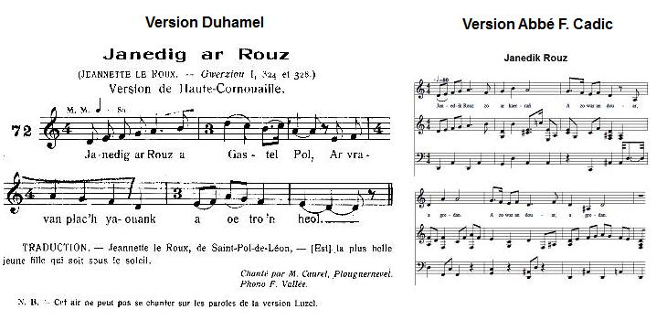

1° JANEDIK ROUZ
Jeannette Le Roux
Jenny Le Roux
Chant collecté par Théodore Hersart de La Villemarqué
dans le 1er Carnet de Keransquer (pp. 128-130).
Mélodie|
Tirée de "La Paroisse bretonne de Paris", sept. 1910, publiée par Abbé François Cadic. |
Tune from "La Paroisse bretonne de Paris", Sept. 1910, published by the Rev. François Cadic |

Pour garder son honneur
Cette mélodie est très proche de celle notée par Duhamel pour la version Luzel de "Janedik Ar Rous"This tune is very similar to the melody recorded by Duhamel to be sung with the Luzel version of "Janedik Ar Rous"
|
BREZHONEK JANEDIK ROUZ [1] p. 128 I 1. Janedik Rouz zo ar kaerrañ A zo war an douar, a gredan. 2. Evel an dour barzh ar weren Zo lagad Janedik 'n he fenn. 3. Evel al laezh e-barzh ar pod Daouzorn Janedik hag he divjod. 4. - Va zad, va mamm, mar am karit Va eured da Zul na lakefet ket: Gant 'n Aotroù Trompet 'zo 'kas me c'haoued. - II 5. - Eurvat, eurvat, tud an ti-mañ! P'lec'h 'ma Janedik Rouz dre-mañ? 6. - Setu ema er sakristi Seizh alc'hwez war he fenn ganti. - 7. Ne oa ket e gomz peurechuet, War lost an inkane voa lakaet. III 8. - Aotroù Trompet, mar va karit, Va lakait da vont war kleuz ar vered, 9. Ha me larin adieu d'am fried A zo intañv e noz e eured. p. 129 10. - O, salokras, c'hwi ne yet ket. Larit hemañ alese, mar karit. 11. - Aotroù Trompet, mar am karit, Va lezit mond war kador an iliz, Ha me laro adieu d'am broiz. 12. - O, salokras, c'hwi n'ez eot ket. Larit hemañ alese mar karit. 13. - Aotroù Trompet, mar am karit, Ho kontell alaouret din rofet 14. Evit troc'hañ lasenn va eured, A zo 'n tammig du-se re stardet. - O, salokras, mar dalc'h din-me, ne rin ket... 15. - Aotroù Trompet, sellit war ho lerc'h! Setu eo amañ lazhet ar plac'h. 16. - Homañ a zo an naontegvet Gwreg-eured am-eus laeret. 17. Triwec'h en devezh o eurejoù Ha toud 'maint marv war un dro. p. 130 18. Ha mar ouifen n'eo ket marv c'hoazh, En em lakaefe warnezhi gant va marc'h. - [2] |
TRADUCTION FRANCAISE JEANNETTE LE ROUX [1] p. 128 I 1. O Jeannette Le Roux ma belle, La plus belle au monde, je crois, 2. Tes beaux yeux de braise étincellent, O Jeannette au charmant minois! 3. Tes mains et tes joues sont plus blanches Que le lait de ce pot, ma foi... 4. - Père et mère, je vous en prie, Dimanche ne me mariez pas! Le seigneur La Tremblaie m'épie... - II 5. - Bonjour, toute la compagnie, Jeanne Le Roux est-elle là? 6. - Non, elle est à la sacristie: Sept verrous! Vous n'entrerez pas. - 7. Il n'écoute pas d'avantage, Il l'enlève et part au galop... III 8. - Laissez-moi, Seigneur La Tremblaie, Franchir le talus de l'enclos, 9. Que mon pauvre époux je salue: Epoux, il est veuf aussitôt. p. 129 10. - Il n'en est pas question, ma chère, Saluez-le d'ici, je le veux. 11. - Entendez, Seigneur, ma prière Et laissez-moi monter en chaire, Qu'à mes voisins je dise adieu. 12. - Non, je ne saurais le permettre Faites-le d'ici, s'il vous plait... - 13. - Seigneur La Tremblaie, je vous prie, Prêtez-moi ce poignard doré 14. Que ma ceinture je délie: On a dû par trop la serrer. - A vous le prêter j'ai scrupule... 15. - Seigneur, regardez en arrière, La fille vient de se tuer. 16. - Cela fera la dix-neuvième Femme qu'à ce jour j'enlevai. 17. Dix huit qu'à leurs noces j'étrenne: Toutes sont mortes, mais après. p. 130 18. Si je ne savais qu'elle est morte, Mon cheval la piétinerait. - [2] Traduction: Christian Souchon (c) 2014 |
ENGLISH TRANSLATION JENNY LE ROUX [1] p. 128 I 1. Jenny Le Roux is the fairest Girl, I think, in the universe. 2. As lucid water in a glass Are the fine eyes of the dear lass. 3. White as milk that from a jar leaks Are Jenny's hands and Jenny's cheeks 4. - Father, mother, if you love me Postpone my wedding on Sunday: Lord Tremblaie lies in wait for me. - II 5. - Hello, hello, the lot of you! Tell me where is Jenny Le Roux 6. - She is safe in the sacristy Whose doors are closed with seven keys. - 7. Before the whole answer was said, On the horse's back she was laid. III 8. - Lord La Tremblaie, I may, I hope, Climb up on the cemetery slope, 9. And say goodbye to my husband Who is widower beforehand. p. 129 10. - With your leave, my dear, you may not Unless you don't stir from the spot. 11. - Lord, allow me instead of it To go up into the pulpit, And say farewell to my neighbours. 12. - This, by no means, I would allow. Greet from here people you may know. 13. - Lord La Tremblaie, does it matter If you lend me your gold dagger? 14. To cut my silk belt, if I might Which was bound a little too tight. - Here you are, though I am not pleased... 15. - Lord La Tremblaie, look to that side: The lass has committed suicide! 16. - She's the nineteenth bride, I daresay, I stole upon her wedding day. 17. Eighteen girls I stole already: All died after they had served me. p. 130 18. Would I not know that she was dead, I'd make my horse on her to tread. - [2] Translation: Christian Souchon (c) 2014 |
NOTES:
|
Bibliographie: Manuscrits: - Collection Penguern: t.91, 149: "Ar seizenn eured"; t. 94, 124: "Jannedic ar Roux"; t. 112, 1, 7: "Tambleu" (Taulé, 1851) - "Otrou Tremblay" (Taulé 1850) - "La Tremblaye" (fragment). - Barthélémy. Nouvelles acquisitions françaises de la Bnf, 3340, 182: "Jannetdic ar Roux" (1855); - Luzel, Naf. 3342, 299: Jeannedik Le Roux (trad.). Recueils: - Luzel: "Gwerzioù I": "Janedik ar Rouz" (Plouaret, 1848, Duault); - Duhamel: "Kanaouennoù Breiz Izel": Janedik ar Rouz (Plouguernével). Périodiques: - F. Cadic, "Paroisse Bretonne", septembre 1910: Janig er Rouz (Melrand). - Y. Le Goff, "Annales de Bretagne" XLVI (1939): Janig ar Rouz (Pleyben). [1] La fille enlevée le jour de ses noces est le sujet d'innombrables chants. Dans la présente série inaugurée par le jeune La Villemarqué, semble-t-il, le seigneur jaloux de son droit de cuissage s'appelle "Trompet". La comparaison avec les collectes de Luzel et de Penguern permet d'établir sa véritable identité: il s'agit de René de Grézille, seigneur de La Tremblaie, qui fut colonel de cavalerie légère pendant les troubles de la Ligue et gouverneur de Moncontour qu'il défendit contre Mercur. Il fut tué au siège du Plessis-Bertrand en 1597. On trouvera d'autres complaintes de filles qui échappent au déshonneur par le suicide, à propos des chants du Barzhaz: [2] L'intrigue est peut-être plus facile à comprendre dans la version De Penguern ci-après. |
Bibliography: Manuscripts: - De Penguern MS Collection: t.91, 149: "Ar seizenn eured"; t. 94, 124: "Jannedic ar Roux"; t. 112, 1, 7: "Tambleu" (Taulé, 1851) - "Otrou Tremblay" (Taulé 1850) - "La Tremblaye" (fragment). - Barthélémy. "New French acquisitions of the National Library, 3340, 182: "Jannetdic ar Roux" (1855); - Luzel, Naf. 3342, 299: Jeannedik Le Roux (trad.). Collections: - Luzel: "Gwerzioù I": "Janedik ar Rouz" (Plouaret, 1848, Duault); - Duhamel: "Kanaouennoù Breiz Izel": Janedik ar Rouz (Plouguernével). Periodicals: - F. Cadic, "Paroisse Bretonne", September 1910: Janig er Rouz (Melrand). - Y. Le Goff, "Annales de Bretagne" XLVI (1939): Janig ar Rouz (Pleyben). [1] There was no end of songs about brides who were abducted on her wedding day. In the present variant, very likely inaugurated by young La Villemarqué, the Lord who insists on his "right of the first night" is named "Trumpet". The comparison with the songs collected by Luzel and de Penguern allows inference as to his real identity: it is René de Grézille, Lord of La Tremblaie, who was a colonel of light cavalry during the troubles of the League and Governor of Moncontour town which he defended against Mercur. He was killed at the siege of Plessis-Bertrand in 1597. Links to other ballads of young girls who escape dishonour by killing themselves, will be found on the pages: [2] Maybe the plot is easier to understand in the following De Penguern version. |
2° AR SEIZENN EURED
La ceinture de noces - The Wedding Belt
Version De Penguern - Tome 91 - Dastum, page 323
|
BREZHONEK 1. - Va zad ha va mamm c'hwi ned oc'h ket fur O lakaad va eureujiñ d'ar Sul Ha c'hwi a c'houzhout e vez klevet Emañ 'n Aotroù Tambleu o essañ va kaoued. 2. Va zad ha va mamm, mar n'am c'heret A-dindan ho mantel va c'huzet Evel ma ra ar yar d'he lapoused: Me wel 'n Aotroù Tambleu o toned! - 3. - Debonjour ha joa en ti-mañ! Ar plac'h a eured pelec'h eman? - Ar sakrist dezhañ en-deus respontet: - Amañ n'e-deus bet eured ebed. 4. Amañ n'e-deus bet eured ebed. Un anterramant eo a zo bet. Mar na kredit ket, kit da weled! Ema ar pili c'hoazh e korn ar vered. 5. - Gaoù a leverez a-kreiz da zaoulagad! Me he wel aze dindan mantel he zad. Me he wel aze dindan mantel he zad. Kerc'hit hi din, pe me yel d'he c'herc'had! 6. - Aotroù Tambleu, mard 'ean me ganeoc'h, Me ne vin-me sujed nemed deoc'h? - Din-me ha d'am holl soudarded, Jannedik Ar Rouz, c'hwi vo sujed! 7. Ha ken ivez d'ar paotr listri, Jannedik, c'hwi a renko jujiñ. 8. - Va lez(i)t da vont war vur ar vered, Da lavar kenavo d'am bried? - Jannedik, diwar talier va marc'h C'hwi laro kenavo mad awalc'h! 9. - Va lez(i)t da vont war vur an iliz, Da lared kenavo d'am c'hontriz? - Jannedik, diwar talier va marc'h C'hwi laro kenavo mad awalc'h! 10. - Aotroù Tambleu, ma n'em c'heret, Ho kontell din-me a roffet. Roit din ho kontell pe ho pognard Da droc'hañ va seizenn a zo re stard. 11. Da droc'hañ seizenn va eured A zo gant va mamm din re stardet. 12. - Prest va pognard n'ho-pezo ket. Prest va c'hontellik alaouret. Diwalit ganti n'en-em droc'hfet Rak dec'h diwezhañ me 'm-eus hi lemmet. - 13. E-lec'h troc'hiñ seizenn he eured, E poull he c'halon he-deus hi plantet. E poull he c'halon he-deus hi plantet Ha d'an douar diwar varc'h eo koue(z)het. 14. - Mar c'houffen a raffen poan dezhi, Me a yafe gant va marc'h dreis(t)i! 15. - An dra-se, va mestr, ne reot ket: Homañ ho damni, an triwec'hvet Na demeus ar plac'hed a eured! |
TRADUCTION FRANCAISE 1. - Ma mère et mon père, vous n'êtes point sages D'avoir fixé mon mariage ce dimanche Alors que vous savez que l'on dit Que le sire de La Tremblaie me convoite. 2. Mon père et ma mère, si vous m'aimez Vous me cacherez sous votre manteau Comme le fait la poule avec ses poussins: Je vois venir sire de La Tremblaie! - 3. - Bonjour et joie en ces lieux! La mariée, où est-elle? - Le sacristain lui répondit: - Il n'y a pas eu de mariage ici. 4. Il n'y a pas eu de mariage ici, Mais il y a eu un enterrement. Si vous ne me croyez pas, allez voir: Les pelles sont encore dans le coin du cimetière. 5. - Tu mens! Ca se lit sur ta figure! Je la vois, là-bas, sous le manteau de son père. Je la vois, là-bas, sous le manteau de son père. Amenez-la moi ou je vais la chercher! 6. - Sire de La Tremblaie, si je vais avec vous, Ne serai-je livreé qu'à vous-même? - A moi-même et à tous mes soldats, Jeannette Le Roux, vous serez livrée! 7. Tout autant qu'aux gars des bateaux, Jeannette, ce sera à vous d'en juger! 8. - Me laisserez-vous monter sur le mur du cimetière, Pour dire adieu à mon époux? - Jeannette, depuis la croupe de mon cheval, Vous pourrez dire adieu tout aussi bien! 9. - Me laisserez vous monter sur le mur de l'église, Pour dire adieu à ceux de mon pays? - Jeannette, depuis la croupe de mon cheval Vous pourrez dire adieu tout aussi bien! 10. - Seigneur de la Tremblaie, si vous m'aimiez Vous me donneriez votre couteau. Donnez-moi votre couteau ou votre poignard Pour couper ma ceinture qui est trop serrée. 11. Pour couper ma ceinture de noces Que ma mère a trop serrée. 12. - Le prêt de mon poignard, vous ne l'aurez pas, Mais le prêt de mon petit couteau doré Attention à ne pas vous couper Car je l'ai aiguisé pas plus tard qu'hier. - 13. Au lieu de couper la ceinture de ses noces, Au creux de sa poitrine elle l'a planté. Au creux de sa poitrine elle l'a planté, Et elle est tombée de cheval sur le sol. 14. Si je savais que cela la fasse souffrir Je lui passerais sur le corps avec mon cheval! 15. - Mon maître, vous n'en ferez rien: C'est celle-là qui vous damnera: la dix-huitième Parmi les jeunes mariées [que vous enlevez]! |
ENGLISH TRANSLATION 1. - Father, mother it was not wise To set my wedding on Sunday While you know everybody say Lord Tremblay is covetting me. 2. Father, mother, if you love me You will hide me beneath your cloak As does the hen her chickens: I see Lord Tremblay coming! - 3. - Good day and joy in this place! The bride to be wed, where is she? - The sexton answered him: - Here was no wedding at all. 4. Here was no wedding at all. But there was a burial. If you don't believe me, go and see! The spades are still in a corner of the churchyard. 5. - You lie, I see it on your face! I spy her under her father's cloak. I spy her under her father's cloak. Bring her to me, or I'll fetch her! 6. - Lord Tremblaie, if I am to go with you Shall I be left to your own devices only? - To mine and all my soldiers', Jenny Le Roux you shall be left! 7. As well as to my sailors', Jenny, I depends on how you behave. 8. - Will you allow me to climb on the churchyard wall, To say goodbye to my husband? - Jenny, behind me on horseback You will say goodbye conveniently enough! 9. - Will you allow me to climb on the church wall, To say goodbye to my neighbours? - Jenny, behind me on horseback You will say goodbye conveniently enough! 10. - Lord Tremblaie, if you loved me, You would lend me your knife. Lend me your knife or your dagger To cut my belt that is too tight. 11. To cut my wedding belt Which my mother has bound too tight. 12. - Borrow my dagger you shall not, But my gilded knife. But mind you don't get hurt I sharpened it yesterday. - 13. Instead of cutting her belt, She stabbed herself in the heart. She stabbed herself in the heart And fell from horseback to the ground. 14. - If I knew she would feel pains, I would let my horse tread on her! 15. - That's a thing, Master, you won't do: She will damn you; she is the sixteenth Bride [you abduct] on her wedding day! |
Janedik ar Rouz (Luzel)